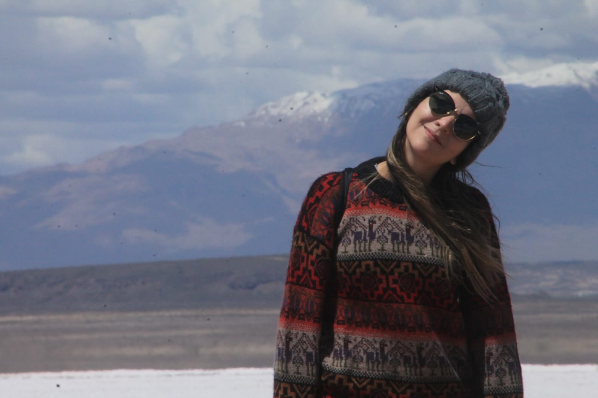
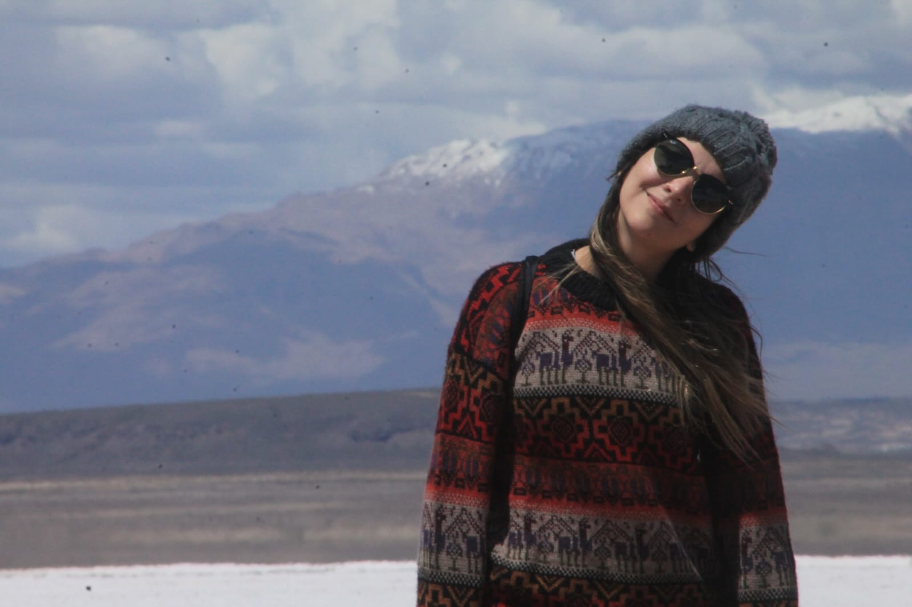

About / Acerca de mí
Since I was a child, I dreamed of becoming a geologist, and today, I feel deeply grateful and fulfilled to be living that dream.
My journey from Medellín, Colombia, has been shaped by opportunities, mentors, and scholarships that opened doors I once thought were out of reach.
Science has not only been a dream but also a refuge, a place where I’ve found purpose, wonder, and community.
I hope to give back through education, especially by supporting young people from diverse backgrounds and countries like mine,
so that the opportunities that shaped my path become the norm, not the exception.
Desde niña soñé siempre con ser geóloga, y hoy me siento profundamente agradecida y feliz de poder vivir ese sueño.
Mi camino desde Medellín, Colombia, ha estado lleno de oportunidades, mentores y becas que abrieron puertas que alguna vez creí inalcanzables.
La ciencia ha sido para mí no solo un sueño, sino también un refugio, un lugar donde he encontrado propósito, asombro y comunidad.
Espero retribuir a través de la educación, especialmente apoyando a jóvenes de diversos orígenes y de países como el mío,
para que las oportunidades que transformaron mi vida sean la regla y no la excepción.
 
